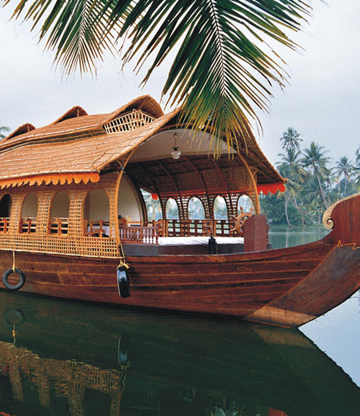

SIGNATURE TOUR TF-4

Duration: 13 N / 14 D
Destinations : Delhi - Agra - Jaisalmer (via Jodhpur) - Goa (via Mumbai) - Kerala
This is a perfect tour for the first time visitor to India. Start at Delhi, the capital of India. After a private tour of the city, take a day excursion to that most romantic monument, and one of the seven wonders of the world, the Taj Mahal. Then via a flight to Jodhpur, drive to Jaisalmer, an ancient city and hilltop fortress town that was once a major stop for silk and spice caravans. Tour the fort, visit impressive Jain temples, and see the elaborately carved stone facades of Havelis. One evening, ride a camel across the Sam Sand Dunes. Travel on to Goa via Mumbai, and enjoy nothingness! The beaches of Goa and its laid back atmosphere are perfect for a recharge. Fly on to Kerala, God's own country - strewn with rivers, lagoons and meandering backwaters, covered in coconut groves and flanked by sunny, palm fringed beaches, Kerala truly is a small slice of paradise. Explore local fishing villages, where colorful boats laze in the harbor against a backdrop of Chinese fishing nets; unwind aboard your private traditional houseboat made from a converted rice barge as you sail through the uniquely quiet backwaters, and discover a world of exotic spices.
Itinerary Highlights:
Day 01: Arrive in Delhi and check into your preferred hotel.
Day 02 : Take a private sightseeing tour of Old and New Delhi, and a rickshaw ride through the markets at Old Delhi. Overnight at Delhi.
Day 03: Take a day excursion to Agra by train - view the Taj Mahal in all its splendor and return to Delhi for overnight stay.
Day 04 : Take the connecting flight to Jodhpur, your boarding point for the drive to Jaisalmer. Overnight at Jaisalmer
Day 05: Take a private tour of Jaisalmer city, the imposing fort, and a mesmerizing evening excursion to Sam / Khuri Sand Dunes. Overnight at Jaisalmer.
Day 06: Fly to Goa via Mumbai, and check into your preferred hotel.
Day 08: Day at leisure, overnight in Goa Day
09: Day at leisure, overnight in Goa Day
10: Day at leisure, overnight in Goa
Day 11: Fly to Cochin, and check into your hotel. Post lunch, indulge in some afternoon city sightseeing. Overnight at hotel.
Day 12: Transfer to the houseboat in the backwaters. Overnight stay at Houseboat
Day 13: Backwaters - overnight stay at Houseboat Day
14: Departure
Where to Stay:
Delhi: Aman / Oberoi / Taj
Jaisalmer: The Serai / Suryagarh
Goa: Taj / Leela / Hyatt
Kerala (plus houseboats): Purity / Taj / Oberoi
Inclusions
- Hotel / Rooms Category as per specified or similar. The hotel accommodation is based on two persons sharing one double room with private facilities and daily American buffet breakfast (Some may include further meals)
- Private touring and sightseeing with your own personal guides, air conditioned vehicle (sedan, SUV or Tempo) with Chauffeur.
- Entrance fees at all monuments and museums mentioned in the itinerary
- Child above 2 years and below 11 years without extra bed, breakfast cost to be settled directly by the guest
- Bottled water throughout the tour.
- Around-the-clock support in each destination during your trip
- Rickshaw ride at Old Delhi
- Excursion to Agra, via train and / or private vehicle, and private guided tour of the Taj Mahal.
- Internal flights if any.
Exclusions
- Anything not mentioned under 'Package Inclusions'
- All personal expenses, portages, optional tours and extra meals / snacks
- Camera fees, alcoholic/non-alcoholic beverages
- Tips, laundry and phone calls
- Medical and travel insurance
- Any increase of Govt. taxes at time of operating the tour
- Any expense incurred or loss caused by reasons beyond our control such as bad weather, natural calamities, landslides, floods, flight delays, rescheduling, cancellations, any accidents, medical evacuations, riots/strikes/war, & etc.